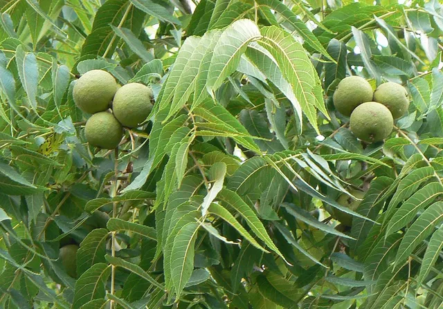

Breads & baking · Popular in Midwest and Southeast
Black walnut bread
Black walnut bread is made with wild black walnut, a favourite in Midwest and Southeast.

How do you make black walnut bread?
Quick bread studded with black walnuts.
Wild ingredients
- Black walnut (Juglans nigra): in season September to October